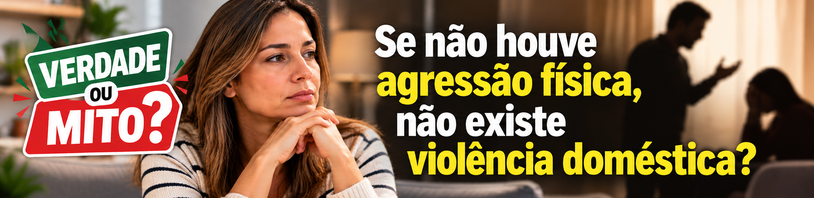
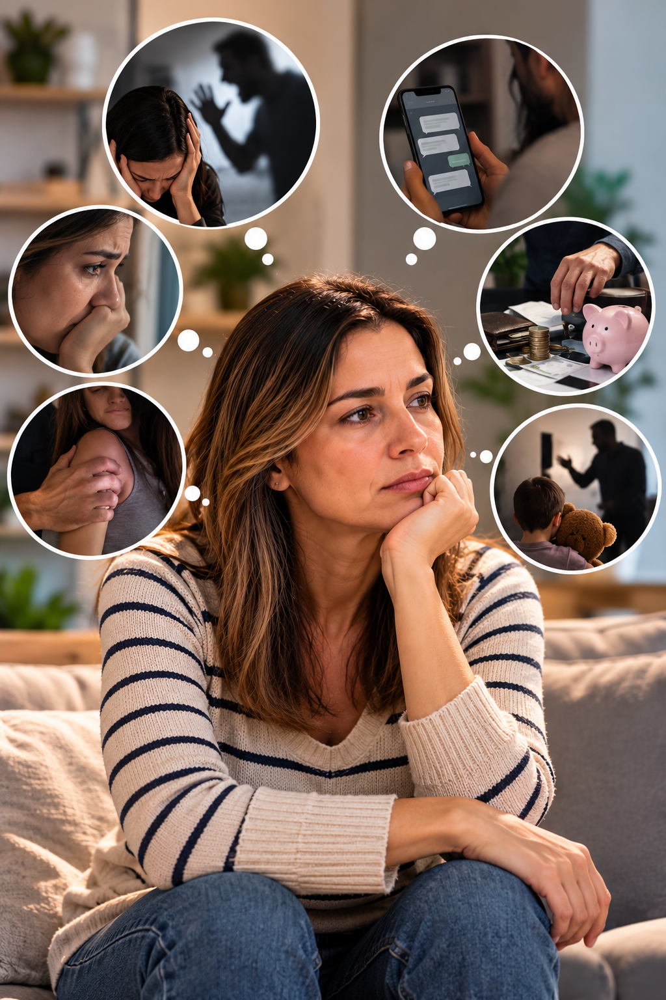
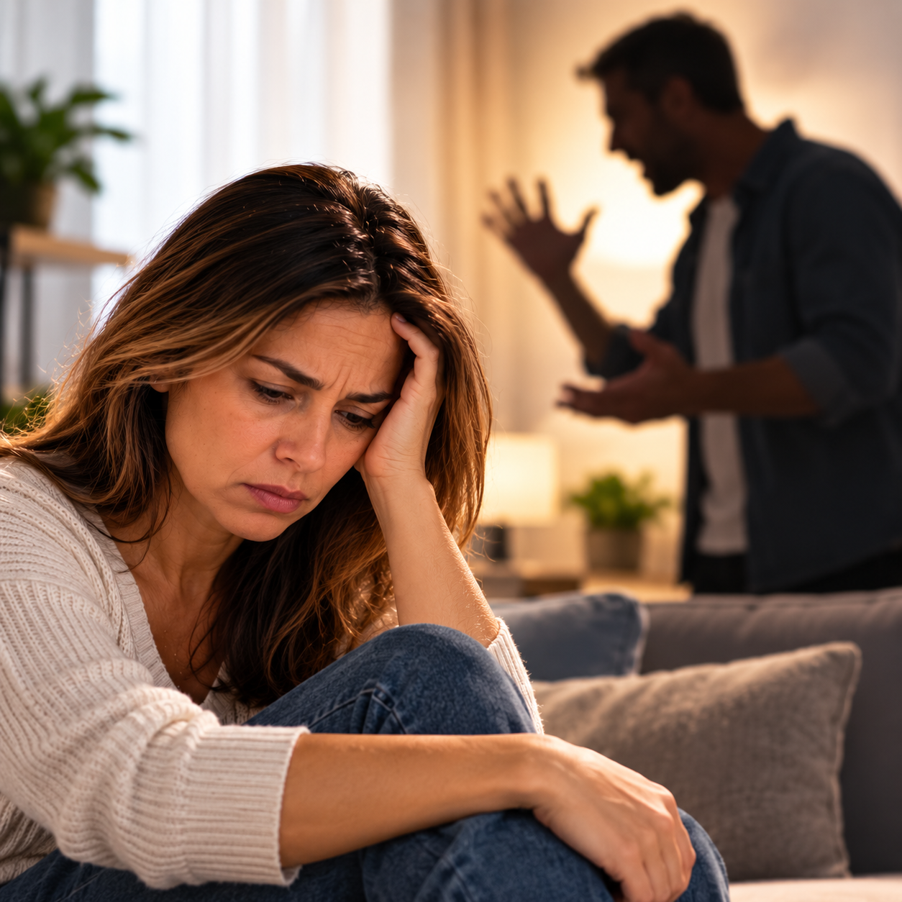

Imagine uma situação.
Não houve tapa.
Não houve soco.
Não houve empurrão.
Não existe nenhuma marca no corpo.
Mas todos os dias aquela mulher é humilhada, ameaçada, controlada, impedida de falar com determinadas pessoas e precisa explicar onde esteve, com quem falou e até como gastou o próprio dinheiro.
Então alguém diz: “Mas ele nunca bateu nela. Isso não é violência doméstica.”
Será?
1. Verdade ou mito: sem agressão física não existe violência doméstica?
MITO. A Lei Maria da Penha não limita a violência doméstica e familiar contra a mulher à agressão física.
A própria lei considera violência doméstica e familiar contra a mulher a ação ou omissão baseada no gênero que lhe cause morte, lesão, sofrimento físico, sexual ou psicológico e dano moral ou patrimonial, dentro das situações abrangidas pela legislação.
NÃO PRECISA HAVER UM TAPA PARA EXISTIR VIOLÊNCIA.
Também não é necessário existir uma marca visível no corpo para que determinada conduta possa ser juridicamente relevante.

2. Quais são as formas de violência previstas na lei?
Durante muitos anos, a Lei Maria da Penha apresentou cinco formas principais de violência: física, psicológica, sexual, patrimonial e moral.
Em 2026, a Lei nº 15.384 acrescentou expressamente ao artigo 7º uma sexta modalidade: a violência vicária.
Portanto, atualmente o texto da Lei Maria da Penha enumera seis formas, sem excluir outras situações que possam se enquadrar na definição legal.
3. Violência física
É provavelmente a forma mais conhecida.
A lei define violência física como qualquer conduta que ofenda a integridade ou a saúde corporal da mulher.
Pode envolver, por exemplo, tapas, socos, chutes, empurrões, queimaduras, sufocamento ou agressões praticadas com objetos.
Mas existe um detalhe importante: a violência doméstica não começa necessariamente quando aparece a primeira lesão física.
Outras formas de violência podem estar acontecendo muito antes disso.

4. Violência psicológica
Essa muitas vezes acontece sem deixar qualquer marca visível.
A Lei Maria da Penha inclui situações capazes de causar dano emocional, diminuir a autoestima, prejudicar o desenvolvimento da mulher ou controlar suas ações, comportamentos, crenças e decisões.
Ameaças, constrangimento, humilhação, manipulação, isolamento, vigilância constante, perseguição, insultos, chantagem e ridicularização estão entre os comportamentos mencionados pela legislação.
Imagine frases como: “Você não vai sair com suas amigas.” ou “Quero saber onde você está o tempo todo.”
Uma relação não precisa chegar à agressão física para que comportamentos abusivos possam configurar violência psicológica.
5. Violência sexual
Outro mito bastante comum é imaginar que, dentro de um casamento ou relacionamento, sempre existe consentimento para uma relação sexual.
Não existe.
A Lei Maria da Penha reconhece como violência sexual, entre outras situações, constranger a mulher a presenciar, manter ou participar de relação sexual não desejada mediante intimidação, ameaça, coação ou uso da força.
A lei também contempla situações relacionadas à contracepção, gravidez e direitos sexuais e reprodutivos.
Casamento ou namoro não elimina a necessidade de consentimento.
6. Violência patrimonial
Essa é uma que muita gente ainda desconhece.
Violência patrimonial pode envolver retenção, subtração ou destruição de objetos, documentos pessoais, instrumentos de trabalho, bens, valores, direitos ou recursos econômicos da mulher.
Na prática, pode aparecer em comportamentos como destruir documentos, impedir acesso ao próprio dinheiro, apropriar-se de bens ou utilizar recursos financeiros como instrumento de controle.
Portanto, violência doméstica também pode atingir a autonomia econômica da mulher.
7. Violência moral
A Lei Maria da Penha também reconhece a violência moral.
Ela ocorre nas condutas que configurem calúnia, difamação ou injúria.
Podem aparecer, conforme o caso concreto, acusações falsas, ofensas, xingamentos ou comportamentos destinados a atingir a honra e a reputação da mulher.
E isso pode acontecer pessoalmente ou também por meios digitais.
8. E o que é violência vicária?
Essa é uma novidade legislativa de 2026.
Violência vicária ocorre quando alguém pratica violência contra uma pessoa ligada à mulher com a finalidade de atingi-la.
A lei menciona descendentes, ascendentes, dependentes, enteados, parentes, pessoas sob a guarda ou responsabilidade direta da mulher e integrantes de sua rede de apoio.
Em termos simples, é quando o agressor utiliza alguém importante para aquela mulher como instrumento para causar sofrimento, medo ou controle.
Orientações oficiais também tratam de situações envolvendo filhos, familiares, pessoas da rede de apoio e violência contra animais de estimação utilizada como meio de atingir a mulher.
9. Precisa morar junto para a Lei Maria da Penha se aplicar?
Não necessariamente.
A própria lei abrange, além da unidade doméstica e da família, qualquer relação íntima de afeto na qual o agressor conviva ou tenha convivido com a mulher, independentemente de coabitação.
Portanto, a análise não se resume à pergunta: “Eles moram na mesma casa?”
É preciso observar qual é a relação existente e as circunstâncias concretas.
10. E se não houver testemunha?
Outra situação muito comum é pensar: “Ninguém viu, então não adianta procurar ajuda.”
A ausência de testemunha presencial não significa, por si só, que o fato não possa ser comunicado ou apurado.
Mensagens, áudios, fotografias, vídeos, documentos, registros de atendimento e outros elementos existentes podem ser relevantes, dependendo do caso.
Por isso, quando for seguro fazê-lo, é importante preservar aquilo que possa ajudar a demonstrar o ocorrido.
11. E as medidas protetivas?
As medidas protetivas de urgência existem justamente para interromper situações de violência e ampliar a proteção da mulher.
Elas podem ser concedidas independentemente da existência de boletim de ocorrência, inquérito policial ou ação judicial, quando presentes os requisitos legais.
Desde 2023, a legislação prevê a possibilidade de concessão a partir do depoimento da ofendida perante a autoridade policial ou da apresentação de suas alegações escritas.
Outra alteração legislativa de 2026 passou a mencionar expressamente, para fins de afastamento do agressor nas hipóteses legais, risco atual ou iminente não apenas à vida e integridade física e psicológica, mas também à integridade sexual, moral ou patrimonial da mulher ou de seus dependentes.
Novamente fica claro que a proteção contra a violência doméstica não se resume a esperar que aconteça uma agressão física.
12. Onde procurar ajuda?
Em situação de emergência ou risco imediato, a orientação oficial é acionar a Polícia Militar pelo 190.
A mulher também pode procurar uma Delegacia de Defesa da Mulher ou outra unidade policial.
Para orientação, informação sobre direitos e encaminhamento à rede de atendimento, existe ainda a Central de Atendimento à Mulher — Ligue 180, gratuita e disponível 24 horas por dia.
Fique atento
☑ Não procure apenas marcas físicas
☑ Observe ameaças, humilhações, controle e isolamento
☑ Violência sexual também pode ocorrer dentro de casamento ou relacionamento
☑ Retenção ou destruição de documentos, bens e recursos pode caracterizar violência patrimonial
☑ Calúnia, difamação e injúria podem configurar violência moral
☑ Desde 2026, a lei também prevê expressamente a violência vicária
☑ Preserve mensagens, áudios, fotografias, documentos e outros elementos relevantes, quando for seguro fazê-lo
☑ Em situação de emergência ou risco imediato, acione o 190
☑ Para orientação e encaminhamento, o Ligue 180 funciona 24 horas
Verdade ou mito?
“Se ele nunca bateu nela, então não existe violência doméstica.”
MITO.
A agressão física é apenas uma das formas previstas na Lei Maria da Penha.
Violência doméstica também pode ser psicológica, sexual, patrimonial, moral e, desde alteração legislativa de 2026, vicária.
E talvez essa seja a principal mensagem desta matéria:
não é preciso esperar aparecer uma marca no corpo para reconhecer que uma situação pode ser violência.
Fontes consultadas
Presidência da República — Lei Maria da Penha — Lei nº 11.340/2006, texto atualizado.
Ministério da Justiça e Segurança Pública — Violência doméstica e familiar — informações sobre formas de violência e rede de proteção.
Ministério das Mulheres — seis tipos de violência previstos na Lei Maria da Penha — material atualizado em 2026.
Ministério das Mulheres — Ligue 180 — Central de Atendimento à Mulher.